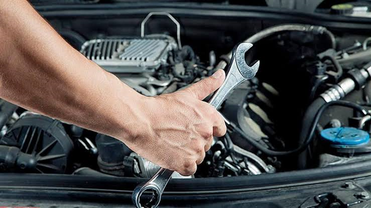
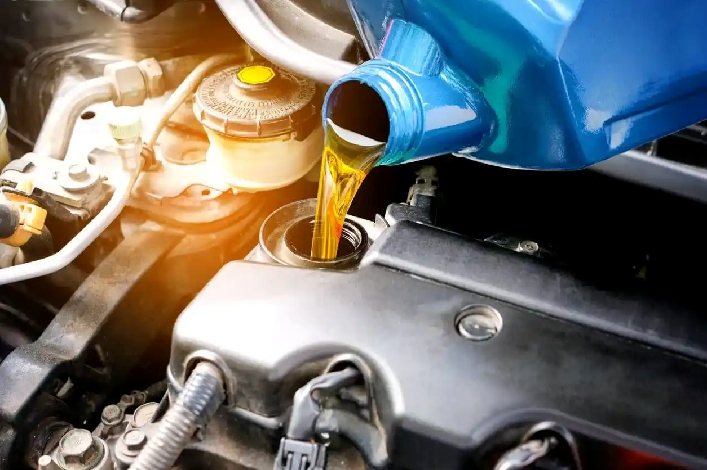
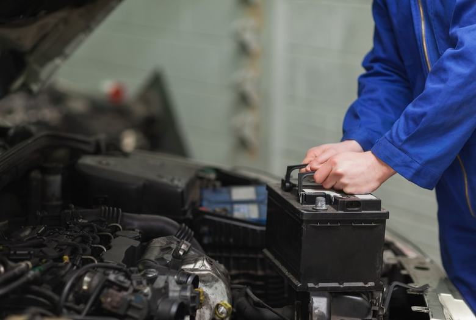

Quem somos nós?
Somos a oficina mecânica de prestígio que você procura.
Manutenção Preventiva

A manutenção preventiva é uma ação planejada e periódica para evitar falhas em máquinas e ativos, enquanto a manutenção corretiva é um reparo realizado após a ocorrência de uma pane ou defeito para restaurar a funcionalidade do equipamento.
Troca de óleo

A troca de óleo e filtros é uma ação de manutenção preventiva essencial para garantir a lubrificação, limpeza e arrefecimento das peças internas do motor, evitando o desgaste prematuro e a quebra por atrito.
Revisão e Alinhamento do Sistema de Suspensão

A revisão e alinhamento do sistema de suspensão é uma manutenção focada na estabilidade do veículo, conforto dos passageiros e preservação dos pneus. O serviço envolve o diagnóstico de folgas e a substituição de componentes flexíveis e estruturais desgastados.
Limpeza do Sistema de Ar-Condicionado (Higienização)

Troca do filtro de cabine (filtro antipólen) e aplicação de spray bactericida nos dutos de ventilação.
Troca bateria

Substituição do acumulador de energia elétrica do veículo e teste do alternador (que recarrega a bateria).
Troca de Velas e Cabos de Ignição

Substituição das peças responsáveis por gerar a faísca que queima o combustível dentro do motor.